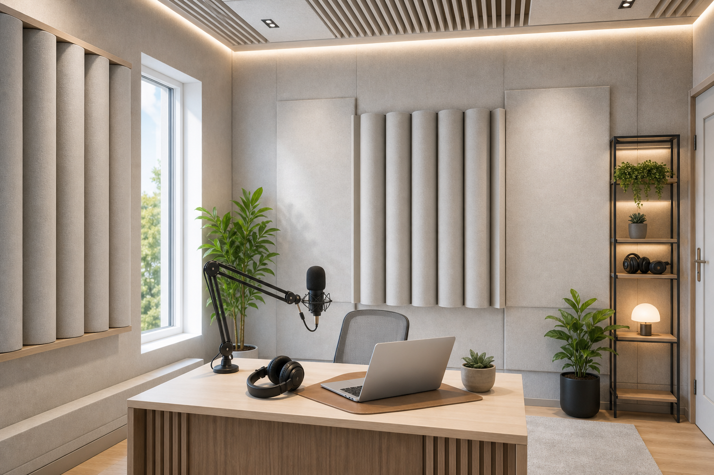

Студия подкаста: акустика с нуля
В подкасте слышно и то, что за стеной, и то, что даёт сама комната. Дорогой микрофон в гулкой спальне часто пишет «бетон» — комната вмешивается сильнее микрофона. Звукоизоляцию ограждений и обработку комнаты лучше развести: это разные работы и разные материалы.

Что ломает запись: соседи и эхо
Микрофон ловит оба слоя сразу. Снаружи — улица, семья в коридоре, телевизор за стенкой. Это звукоизоляция: стена, дверь, иногда потолок. Внутри — отражения от голых стен: голос растягивается, появляется «ванная». Панели и расстановка чинят второе. Первое — нет.
Гардеробная с одеждой, ковёр и экран за микрофоном иногда хватают, если пишете днём и требования скромные. Ночная запись, тонкие стены, два ведущих — уже другой уровень. Тогда смотрим спецпроект.
Звукоизоляция: когда без неё запись портит дом
Вечером в квартире с гипсовыми перегородками соседи слышат разговор даже «тихо». Изолируют перегородку и дверь, щели закрывают, при шагах сверху — потолок (шум с потолка). Розетка на общей стене — дыра; про это отдельно: мостики и щели. Закладывать проще на черновой.
Есть и обходы без капитальной стены: другая комната, запись, пока дом тише, временная «кабина» из шкафа. На дистанционной оценке сравниваем по деньгам и по тому, что реально даст тишину.
Ситуация
Подкаст в спальне 14 м². Соседи слышат разговор. В дорожке — эхо.
Что проверяет ЦИА
Перегородка — для соседей. Поглотители у микрофона — для эха. Иногда дешевле уйти в гардеробную 4–5 м², чем изолировать всю спальню.
Внутри комнаты: куда ставить поглощение
Не всю стену. Обычно — бока и сзади от микрофона, где первые отражения бьют в капсулу. Ковёр, плотные шторы, стеллаж с книгами уже режут часть гула. Почему комната «гудит» — здесь.
Пирамидки с маркетплейса без расчёта часто глушат только верх. Низ остаётся гулким, голос — плоским и неровным. Для постоянной студии указываем тип и места в спецпроекте — иначе через полгода снова переклеиваете.
Без ремонта: что проверить за вечер
Одеяло за микрофоном, ковёр, шкаф с одеждой. Нормально для теста формата. На постоянный канал этого хватает ненадолго. Выделить нишу под студию и заложить акустику в ремонт выходит дешевле, чем ломать готовую отделку через год.
Клавиатура, ПК, кондиционер
Всё близко к капсуле слышно. Микрофон дальше от вентилятора корпуса, ось — на рот, не на клавиатуру. Экран на столе помогает. Ровный гул из решётки — не эхо: это вентиляция и трубы, чинится иначе.
Площадь
Один ведущий за столом: часто 6–8 м² при нормальной обработке. Форма и параллельные голые стены решают больше, чем «ещё два метра». Два человека и камера — другой объём, считаем отдельно. На оценке договариваемся, что важнее сейчас: стена, комната или оба.
Как обычно работаем
Сначала дистанционная оценка по плану и фото — понять масштаб. Если идём в ремонт — замер и спецпроект с узлами для бригады. Чем отличается замер от проекта — коротко здесь. Логика близка к студии / кинотеатру.
Что ломает результат
Микрофон до проверки комнаты. Поролон на все стены. Обещание соседям «буду тихо», если стена тонкая и пишете после 22:00. Гул вентиляции, принятый за эхо. Рабочий порядок у нас такой: тестовая дорожка → разговор с инженером → перенос, бюджетная обработка или проект в ремонт.
И рядом кинотеатр
У домашнего кинотеатра та же развилка: сначала не мешать соседям, потом качество внутри. Подкасту не нужен саб на 120 дБ, зато капсула в полуметре от рта — комната слышна острее. Потому внутренняя обработка для голоса часто критичнее, чем «ещё слой на стене».
Дверь в коридор
Перегородка может быть в порядке, а звук уйдёт под дверью и вернётся фоном в записи. Уплотнитель, порог, иногда вторая дверь. На замере это отделяем от чистого эха в комнате.
Если ремонт ещё впереди
Подключайтесь на черновой — когда вешать акустику. Дверь с уплотнением, перегородка без щелей, вентиляция без постоянного гула — это конструкция, не панели «потом». Динамик менее чувствителен к комнате, чем конденсатор: в шумной квартире иногда проще начать с него.
По теме
Эхо внутри — почему гудит комната. Если слышат соседи — шум от соседей.
Частые вопросы
Оставить заявку
Опишите помещение и задачу — подскажем формат работы ЦИА. Если вы прошли Проблемомер, поля заполнятся автоматически.
Задача отправлена